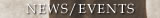
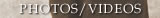

|
As a young child, Jaff and his family moved to join their father who had taken work in France a few years earlier. Jaff's formal education and schooling were in French and thus westernized, yet he remained very connected with his family and with the original roots and the traditions of his parent's culture. This was especially true regarding the traditional education given young men in Morocco. It was his father's intense and sometimes severe teaching that allowed Jaff at a young age to develop a keen sense of observation and an ability to work on himself through simple gestures and everyday life. Throughout his youth, Jaff enjoyed a great deal of success at fairly high-levels of competition in various sports. From this he knew that he was meant to find his path through the use of his physical prowess; however, his interests in teaching and self-development did not allow him to fulfill his inner callings through competitive sports. It felt very natural for him when he turned to Aikido and the way of budo. While simply observing his first Aikido lesson, he immediately recognized the same elements that his father had sown in him: discipline, attention, availability and freedom. From that day, he decided to earnestly study the path of budo. The non-competitive aspect of Aikido practice was also an important part in this choice. His encounter with a renowned expert, Toshiro Suga and Suga Sensei's words of encouragement also helped solidify his decision. It was in this way that in 1983, Jaff gave up his job in order to dedicate himself entirely to the way of budo. That same year, desiring to develop his practice of weapons at a much deeper level, he started learning Muso Shinden Ryu Iaido (Japanese sword) under the direction of one of the greatest European experts, M. Tiki Shewan (who is also a very advanced Aikido sensei). This meeting was another key element in Jaff's commitment to his path. Later in 1989, in Geneva, Tiki Shewan introduced Jaff to Pascal Krieger Sensei. Krieger Sensei is an expert in Shindo Muso Ryu Jodo (way of the stick) and in Japanese calligraphy. Pascal Krieger's open-mindedness and human touch convinced Jaff to start the demanding practice of Jodo. Jaff Raji is currently an instructor of the European Federations of Jodo and Iaido and as such is actively engaged in the transmission of these two disciplines. For many years, Jaff also was uchi deshi (dedicated student) to Tamura Sensei, who is head of the French Federation of Aikido and Budo (F.F.A.B), and a technical consultant throughout Europe. In this role, he traveled with Tamura Sensei and attended regular seminars and demonstrations all over the world. Jaff's experience as Tamura's uke reinforced his own learning and contributions in Aikido. Due to Jaff's commitment, his seriousness in the practice, and his technical quality, he was chosen to be a member of the National Technical Board in the F.F.A.B, a post he occupied until 1997. Throughout his practice of Aikido, Jaff was fortunate to be able to study at seminars under the direction of many recognized Japanese Masters who were direct students of O'Sensei. These include: Arikawa, Saito, Yamada, Sugano, Kanai, Saotome, Suganuma, Osawa, the late Doshu Ueshiba Kisshomaru and the current Doshu Ueshiba Moriteru, direct heirs of the founder. At this time Jaff Raji holds the ranks of 5th Dan in Aikido, 4th Dan in Iaido and Okuiri-Sho (official teacher) in Jodo. In 1986, he earned the State Diploma of Aikido Teaching 1st degree, and ranked first in his promotion. In 1989 he completed the 2nd degree. For 17 years, from 1984 to 2001, his permanent dojo in Rennes developed within the association Les Cadets de Bretagne (multi-sport and cultural association). He trained many students and many teachers. Students from abroad often came to perfect their practice. In this way he has contributed since 1984 to the creation of many dojos and to the development of Aikido, Iaido and Jodo in Ille-et-vilaine where he works as a technical consultant. He has been the manager of the Aikido section within the S.I.U.A.P.S in the University of Rennes since 1987. From 1997 to 2000, he was also a trainer at the T.N.B school (Britanny National Theater), where he helped actors with body work and consulted on the martial aspect of some plays and productions. His technical and educational qualities have drawn many students to his seminars in France and abroad. His annual seminar schedule includes Reunion Island, Austria, Germany, Ecuador, Hungary, Ireland, Italy, Morocco, Romania, Slovakia, Venezuela, and the United States. From the beginning of 2001 though June 2003, Jaff worked with the association OPTIMA that specializes in mediation. There he provided continuous professional training on a psycho-physiological level for the "correspondants de nuit" (night mediators) who work in Rennes and Nantes to help make local communities safer places. In June 2001, he left his dojo at the Cadets de Bretagne and started looking for a new place where he could teach and train the arts he is dedicated to at a new level. That July, he and his closest students decided to create the Association Ecole de Budo R.A.J.I - with Jaff's last name, RAJI, as an acronym for Rennes Aikido Jodo Iaido. In relation with the Ille-et-Vilaine Departmental Commitee of Aikido, they set up "l'atelier d'etude" (the study workshop, offering seminars and intensive training time for students looking to study Aikido differently. The basis for this intense work was to improve technically but also to study the historical and fundamental concepts of Aikido and budo beyond just the martial technique. From September 2001 to June 2003, the new school was at the Dojo Rennais. An old high-school gym was also found for the practice of Jodo and Iaido. Ultimately, the aims of Ecole de Budo-RAJI could not unfold at the Dojo Rennais, so in September of 2003 they moved to a spacious dojo in the University of Rennes where Jaff was already teaching. Near the same time, two of his oldest students convinced him to start a second dojo in the city of Cesson-Sevigné, a town bordering on Rennes. In September 2005 these classes moved to a new facility at the second campus of the University of Rennes. In September 2003, Jaff started a new line of work and therapy through movement in the penitentiary for women in Rennes. There he works with a select group of women with problems of addictions and violence. The Portland Summer Seminar of August 2003 drew several teachers and managers from dojos around the world where Jaff had been teaching for a long time. Those people came from Venezuela, Ecuador, Hungary, France, Canada and the USA. There, they took the opportunity to convene an impromptu general assembly; and discussed their interest in creating a working organization under the technical management of Jaff, following the principles of a brotherhood. Together, on August 27th 2003, they founded the Ecole de Budo RAJI - International. |

|  |
|  |
Tenjinchi Dojo | EBR International |Raji Ukemi Fitness| Aikido | Jodo | Iaido | Children's Group | Timetable | Instructors |